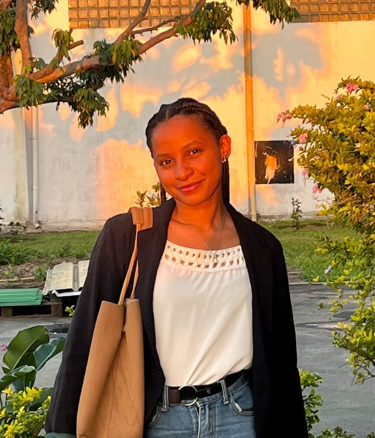

Disponible pour de nouveaux défis professionnels
Bonjour, je suis Lorinah.
J’aime quand tout est bien organisé.
Secrétaire technico-commerciale diplômée en Gestion & Comptabilité. J’accompagne les activités administratives, commerciales et comptables avec rigueur, méthode et sens du service.

PROFIL PROFESSIONNEL / 2026
Lorinah Ursulla AugustinGestion · Comptabilité · AdministrationTOAMASINA, MGOrganisée & impliquée
01 / À propos
La rigueur dans le quotidien, la qualité dans chaque détail.
Un profil polyvalent, à l’aise dans les missions qui demandent de l’organisation, du suivi et une bonne coordination entre les interlocuteurs.
Dynamique, sérieuse et motivée, je fais preuve de rigueur et d’organisation dans mon travail. J’apprécie les environnements collaboratifs et je m’adapte facilement aux nouvelles situations.
Toujours prête à apprendre, à relever de nouveaux défis et à développer continuellement mes compétences, je souhaite contribuer efficacement au bon fonctionnement d’une équipe et de ses activités.
« Être fiable, organisée et attentive aux détails : c’est ma façon de contribuer à la réussite collective. »Ma philosophie professionnelle
02 / Compétences
Des compétences concrètes, au service de l’équipe.
De la gestion documentaire au suivi commercial, avec des outils bureautiques et comptables adaptés aux besoins de l’entreprise.
Gestion & comptabilité
Suivi commercial
Savoir-être
03 / Expériences
Mon parcours professionnel.
Des expériences en environnement commercial, administratif et comptable qui m’ont permis de développer une approche polyvalente du travail.
AVR. 2025 — PRÉSENT
Secrétaire Technico-Commerciale
SCRIMAD — Société de Commerce, de Représentation et d’Investissement de Madagascar
- Accueil physique et téléphonique des fournisseurs et prestataires.
- Établissement et suivi des demandes de devis et bons de commande.
- Suivi des achats, approvisionnements et livraisons, avec traitement des écarts.
- Gestion complète des documents administratifs et commerciaux.
AOÛT. — OCT. 2024
Stagiaire Comptable — Stage de mémoire de Licence
Cabinet RABENJARIJAONA
- Tenue comptable et enregistrement des factures.
- Assistance à l’élaboration des états financiers.
- Archivage numérique et physique des pièces comptables.
SEPT. — NOV. 2023
Stagiaire — Département Comptabilité
S.P.A.T — Société du Port à gestion Autonome de Tamatave
- Stage d’imprégnation au sein du département comptabilité.
04 / Formation
Apprendre, comprendre, progresser.
Un parcours orienté vers la gestion, la comptabilité financière et la maîtrise des outils de comptabilité informatisée.
2023 — 2024
Licence en Gestion — Comptabilité Financière
ISSIG — Institut Supérieur Spécialisé en Informatique et Gestion
2021 — 2023
Études en Gestion
ISSIG — Institut Supérieur Spécialisé en Informatique et Gestion
2020 — 2021
Baccalauréat — Section Tertiaire
Lycée Privé Stella Maris
2020 — 2021
Brevet d’Étude Professionnel (BEP)
Lycée Privé Stella Maris
SEPT. — OCT. 2019
Formation en comptabilité informatisée
Logiciel SAGE SAARI
Langues
MalagasyLangue maternelle
FrançaisCourant
AnglaisNotions
05 / Contact
Et si nous travaillions ensemble ?
Vous souhaitez échanger à propos d’une opportunité professionnelle ou d’une collaboration ? Je serais ravie de discuter avec vous.